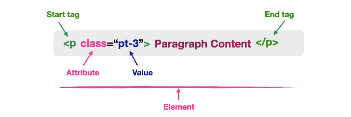
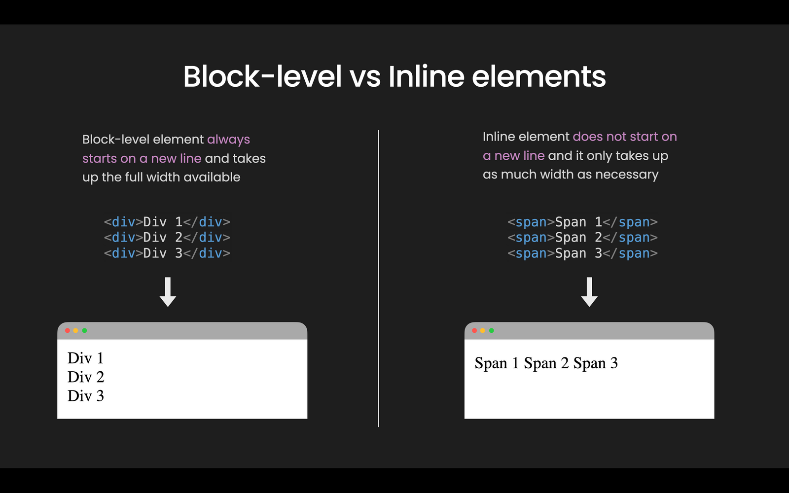
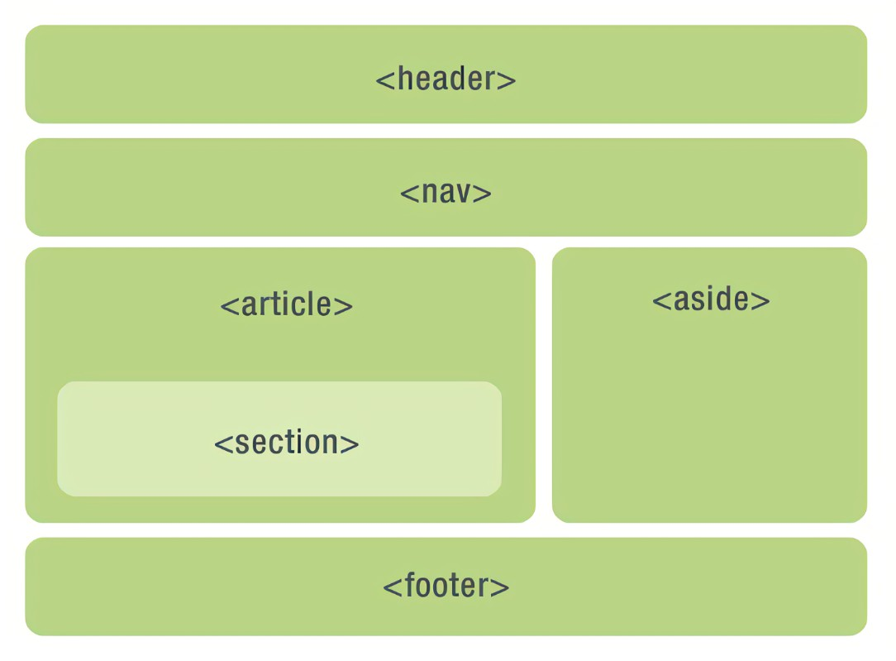

Learning Coding From Stratch
This is my first website, I started creating this website on: 15:36 05/02/2023 i'm learning software development, I will be using this website to record my studies over the next year and to help me to practice my coding!
Also a big thank you to Patrick Loner, Codecademy, Amazon,
IT OnlineLearning for helping me along my journey.
In this website you will find a detailed account of everything I am learning on my a beginngers HTML essentials course whilst studying software development, I hope that you enjoy!
Not a fan of Wordpress? See my own personal welcome page made from scratch here!
Again everything inside the course is completely from scratch no copy and paste just a lot of time and reading.
The HTML Structure
- The HTML Document:
- The HTML is the document itself. HTML stands for Hyertext markup language
and it is the foundation of the world wide web and is the glue that holds
webpages together, Wihtout having the HTML code wepages would have no structure
and no content.
- DOCTYPE Declaration:
- Defines to users and browser what version of HTML the document was writen in.
- The Head:
- Enhances the content as well as this browser users also cant see the content
on the web page itself.
- The Body:
- Defines important content on the webpage, this is content that web users can also see.
- The Footer:
- Defines the information about the webpage, designer or company, ect..
Understanding HTML 5
- Elements
- The Whole Content within a tag for example.

- Attributes
- All HTML elements can have attributes as seen above.Attributes provides additional information about the element and is always specified in the Start Tag.
- Syntax
- The HTML Syntax is one of the first lessons beginners would come across when learning the markup language. In computer programming, the markup is used to annotate
a document and the syntax works like a format or structure to write the document. This is the way to direct browsers on how to interpret web pages.
- Block level elements.
- A block-level element can take up one line or multiple lines and has a line break before and after the element.
The picture above and below is a great example of this.
- Inline Elements
- An inline element is the opposite of a block level element, it does not start on a new line
and takes up only the necessary width. For example it only occupies the space bounded by the tags instead of breaking the flow of content.
As seen below.

Creating lists and working with tables
Lists
Lists have much variety and can be used in many ways. One for example would be seen above in the section "Understanding HTML 5." Having the word above in bold and the definition below. The tags for definition lists are as follows "DL/DT/DD"
Afew other main ones used in most webistes with lists are as follows,
- ordered lists "OL"
followed by the "LI" tag
- Unordered Lists "UL"
"LI"
Creating a Basic Table
This is a breif summary of creating or using a basic table in HTML 5. I will use small elements in the styling section to make the table easier to read however styling tables will be used in CSS which will be covered later. The table itself will explain the tags used to create the table and some other tags for some styling tips.
For more information about tables please click Here or vist https://www.w3schools.com
| Tag |
Description |
|
Table |
Defines a table to HTML |
|
th |
Defines the tables header |
| tr |
Defines a row in a table |
| td |
Defines a cell in a table |
| Caption |
Defines a title for your table |
| colgroup |
Selects a group of one or more columns in a table for formatting |
| col |
Selects a columns properties for each column within the colgroup element |
| thead |
Groups the header in the content of the table |
| tbody |
Groups the body content in a table |
| tfoot |
Groups the footer content in a table |
Structuring Web Pages and why it matters
All Web pages have a sort of structure that we both come to recognize and expect. Pages are structed into variuos sections such as navigation menus,main content,additional content and so forth. This is so common we intuituvely expect it when looking at a web page. In addition to this people use search engines whivh rely on the structure of the data.
Below you will see a basic web page structure using HTML 5. The header would most likely be the company information. The main content would be the article and section with any additonal related content aside most likely to the right. Finally the companys contact informtaion, copyrights and again navigation.

Semantics
The use of HTML markup to enhance and reinforce the meaning of the page's content rather than merely concerning the look and feel of the content. Semantic elements are elements with meaning that help to define the page content and can be used as oppesed to non-semantic elements like "DIV and"Span"
Semantics elements can be used in HTML for headings and sectioning tags to describe the outline of the page's contents very similar to a table of contents. Doing this provides the ability to skin and search your files and can identifiy different types of content related to other content.
Examples of non-semantic elements:
"DIV" and "Span" - Tells nothing about its content.
Examples of semantic elements:
"form","table", and
"Article" - Clearly defines its content.
Article Element
The article element specifies indepenedent self -contained content and often gets confused with the section element. An article should make sense on its own and it should be possible to distribute it indpendently from the rest of the site. Here are some examples of a web pages that would use such an element
- Forum Posts
- Blog Posts
- News Story
- Comments
Section element
The section element defines sections in a document,such as chapters,headers,footers,or any other sections of the document. When it would make sense to syndicate the content authors are encouraged to use the article element instead. Section is not a generic element for styling purposes but instead of a thematic grouping of content.
The Div Element
The Div element has been spoke about alot so far but what does the div tag do and how do we use it correctly in a web page. The div tag allows us to structure or section content without giving it any additional semantic meaning. It can be called an anonymous grouping tag that doesnt really mean anything, if there is a tag that passes along the semantic meaning of the text it should be used instead The div tag defines a division or a section in an HTML document.The div tag is used as a container for HTML elements which is then styled with CSS or manipulated with JavaScript.The div tag is easily styled by using the class or id attribute. Any sort of content can be put inside the div tag!
Working with Links, adding images and other media
The World Wide Web (WWW) is all about links to other locations making it a giant playground where you can surf at high speed to different parts of the world. Hyperlinks give your web page the ability to interact with other sources around it in fantastic ways. Virtually every web page beyond the simplest example will have at least some form of hyperlink.
In order to create hyperlinks you must have three key pieces of information and afew other extras.
- Web adress
- Some text to display
- An Anchor element "A"
- An inline element that should alwyas be placed within a block element
- Used to anchor a URL to some text on your webpage
- Contains an href attribute that glues everything together
Example: www.Google.Com
Absolute Links And Relative Links
Absolute links is the full complete URL to connect to a web page or online resource. URL components Protocol "http://" Domain Name "www.abc.com" File name "/default.html.
Example:https://www.w3schools.com/tags/tag_table.aspTable
Relative Links is uses to a type of shorthand to specify the URL you are pointing to, is only used in certain situations like linking within the same page or the same site. When the browser sees a link in a href element it assumes that because the domain name is missing it is relative link. Relative links have the advantage of functioning even if you happen to move the web site to another server or domain.
Example: About Myself
Working With Links
There are various ways in which you can customize the links in your web page, For Example:
- Open linked documents in new windows using the target attribute
- Link to a specific location within a web page
- Use the Name attribute
- Linking to non-HTML resources i.e Audio, video and files
- Find out more information about fragment idenifiers Here
Working With Images
The first step to working with images is to determine the appropriate file format and size for your images. Web-friendly images arent the same as images for other mediums and require a smaller size for fast page loading as well as a cross-platform file type. Images also play an important role on the web page and can include:
- Logos
- Banners
- Clickable navigation aids
- Content
When well used they are a key element of page design and when used poorly they can result in an unreadable, unintelligble page and a poor user experince.
Here are some of the best genreal use file formats:
- GIF- Graphics interchange Format
- Supports only up to 256 colors
- Best for less-complex,nonp-photographic images like icons,line art,or clip art.
- JPEG- Joint Photographic Experts Group
- Supports 24-bit color
- Cross platform and application independant
- Compromises quality when file is compressed though a balance can be struck
- PNG - Portable Network Graphics
- Supports up to 32-bit color
- Combines the best aspects of GIF and JPEG
- Offers the best balance between quality and file size
Adding images to the page requires that you know the location of the image and this works best if you can use relative locations. You could use absolute source references to images stored elsewhere.
However, using relative sourcce is preferred for control, speed and copyright. Best practice is to create a separate images directory so that the relative path to all the files on the page is the same. Also Requies that images be stored on the web server.
In order to place an image on the page you will use the img element, known as an empty or singleton element because it only uses a single tag. Img enables you to specify the place on the page where you would like to place the image. The img tag also uses the src attribute to identify the location of the image. Following the source attribute the alt attribute, the alt should be used in order to define alternate text to screen readers if picture doesnt load etc. Other attributes are as follows Title="",Height="",Width="". Try adding a title to your image as well as nest a hyperlink inside for a more realstic look.

Styling Web Pages
In in this chapter I will be showing a summary of some of the things I learned with styling web pages. This chapter will most likely consist of five sections focusing on how they help style a web page with HTML and a breif look into CSS and why most styling will be created on this software platform instead. The five sections in this chapter Im focusing on will be:
- HTML and CSS
- Creating Inline Styles
- Controlling Typography
- Adding Color
- Externalizing Styles
HTML and CSS
HTML and CSS have a virtually inseparable relationship with one another to the extent that in order to learn web development you nust understand both languages as HTML defines the structure and CSS defines the styling.
There are types of styles to look out for when styling your web page here are afew examples:
- Inline Style
- Adding markup to individual HTML elements.
- Internal Style Sheets
- Sequential markup added to the style element in the HTML document.
- External Style Sheets
- Linking HTML documents to a .css file that contains your styles.
- Style differently
- Base your style on whether an HTML document is being view on a desktop or mobile device.
Each style sheet is made up of style rules containing two parts.
The Selector which is the element that you want tot affect on the page for example "h1" this style rule will affect all h1 elements on this page.
The Declaration which is going to be a property and a value and mostly everytime starting with a {. The declaration property will be mostly the description as to what is happening to the selected element for example "color:" or "font-size:". Properties always end with a colon:. Finally the value, which will mostly be telling the broswer what color the font is or what size the font is. The value will always end with a semi colon;. Here is an example of CSS syntax with the h1 element, this example clearly shows the selector and declaration with correct property and value.

Declarations can configure a single or multiple values for example changing the color to teal or changing color to red as well as font to arial. In addition to this, whitespace is irrelevant but each designer will have their own preference as to how they write CSS style rules. Finally, style sheets override the browsers default styling and your style declarations will alter in the final appearance of the web page in the browser.
Keep in mind that users can override your styles.
Creating Inline Styles
Inline styles use the style attribute and are usually applied to a single element within a page. It's essentially passsing CSS within the HTML element and isn't very efficent because it does apply to just one element. Sometimes they are useful such as with HTML based email.

Controlling Typography
In order to control fonts you need to understand various properties available in CSS as well as certain considerations.
- Font Families
- Font Styles
- Font weight
- Font Size i.e Px, em or %
- 1. Font Families
- Generic family - groups with a similar look like "serif or "Monospace"
- Serif fonts have small lines at the end of characters.
- Sans-serif fonts do not have those line.
- Monospace fonts have characters all the same width.
- Font family- a specific font family like "Times New Roman"or "Arial."

While it's not required some addition information about the CSS Box model can be very helpful when dealing with typography. The CSS box model is essentially a box that wraps around every HTML element.

Creating Your Own Web Site
- There are many steps to creating a web site.
- Choosing and purchasing a domain name.
- Choosing a hosting provider.
- Planing out the sute design on paper.
- Creating the appropriate file structure.
- Creating your HTML documents.
- Creating your style sheets.
- Creating content for your HTML documents.
- Putting it all together.